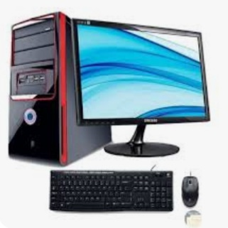
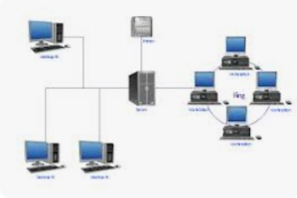
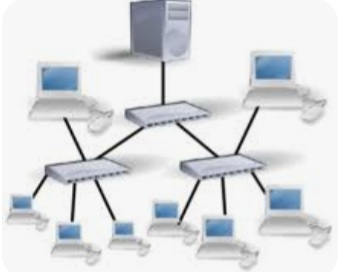
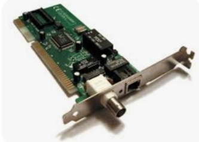
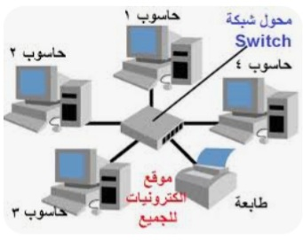
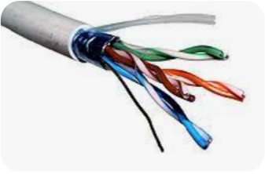
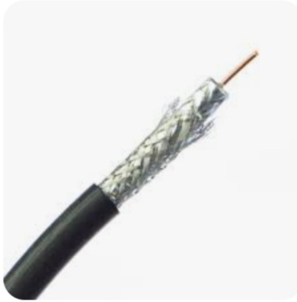
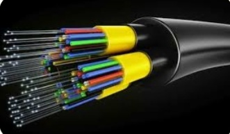
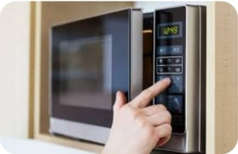
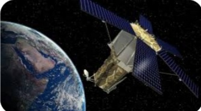

|  |
مكونات شبكه الانترنتالحاسب الرئيسىوهو الجهاز الرئيسى لتشغيل الشبكه ويسمى جهاز الخدمه الرئيسى يقوم هذا الجهاز بالتحكم فى جميع اجزاء الشبكه |
|  |
(work stations) محطات العملوهى الحاسبات الشخصيه بكافه انواعها او الوحدات الطرفيه المتصله بالجهاز الرئيسى |
|  |
(communication lines)خطوط الاتصالوسائل يتم من خلالها تبادل البيانات بين الحاسب الرئيسى والحاسبات الفرعيه وتشمل الكابلات بأنواعها المختلفة |
|  |
(network Interface card)بطاقه الشبكههى البطاقه التى يقوم الحاسب باستخدامها للاتصال بالشبكه وهناك بطاقه داخليه وتثبت على اللوحه الام وبطاقه خارجيه |
الاجهزه الملحقهيمكن استخدام بعض الاجهزه وربطها بالشبكه مثل (الطابعات والراسمات) |
|
|  |
(communication switchs)محولات الشبكههى أجهزة لربط حاسبات الشبكه ببعضها وبين. الشبكات ولتوجيه البيانات بين حاسبات الشبكه ومن هذه الاجهزه (Hub-Bridge-Router) |
برامج الشبكهبرامج الاتصال التى تتحكم فى تشغيل نظام الشبكه ويتم تخزين هذه البرامج فى الحاسب الرئيسى server ومن امثلتها (unix-novel) |
|
|  |
وسائل الاتصال بين الحاسباتوسائل الاتصال السلكيهالكابل المزدوج المجدولهو يشبه كابل الهاتف العادى وهو اكثر وسائل اتصال الشبكات المحليه وأنتشارآ ويحتوى على اربعه ازواج من الاسلاك ملفوفه مع بعضها لتكون كابل وهذا النوع رخيص التكلفه. لكنه بطيئ فى نقل البيانات كما انه ينقل كميه قليله من البيانات ويتأثر بطول المسافه ويتأثر بالضوضاء |
|  |
الكابل المحورىهو عباره عن سلك من النحاس سميك يوجد داخل غلاف ابيض للحمايه وتغلفه شبكه من الاسلاك الرفيعه وينقل هذا الكابل البيانات فى اشارات رقميه كهربائيه. كما انه يتميز بارساله اشارات قويه وسهل التركيب والصيانه رخيص الثمن نسبيا لكنه يتاثر بالضوضاء بدرجه اقل من الكابل المزدوج المجدول بحيث حمايته من الماء والمواد المؤكسده |
|  |
كابل الالياف الضوئيةوهو افضل انواع الكابلات حيث انه يستخدم الالياف الزجاجيه التى تنقل من خلالها البيانات بصوره اشارات رقميه ضوئيه يتميز بأنه قابل للعمل لمده طويله دون تلف وسرعته عاليه كما انه صعب الدخول عليها فهى تتمتع بالسريه لكنه غالى الثمن يتطلب مهاره تركيب وصيانه |

|
وسائل الاتصال اللاسلكيهموجات الراديوتستخدم لارسال البيانات باشكالها المختلفه مثل(النصوص-الصور-الفديو-الصوت) من موقع الى موقع كما يمكن تصميم الشبكه المحليه لاسلكيا ويستخدم فى الفنادق والمقاهى والجامعات |
|  |
الميكروويفيستخدم موجات لاسلكيه عاليه التردد فى نقل البيانات خلال الفضاء من الحاسبات باستخدام هوائيات صحنيه يتم تثبيتها فى اماكن مرتفعه وتستخدم هذا النظام فى الشبكات الواسعه (WAN) |
|  |
الاقمار الصناعيهيتم تثبيت الاقمار فى مدارات ثابته فوق الارض بحيث تستقبل البيانات المرسله فى شبكه حاسب عن طريق محطات ارضيه فتقوم بتقويه الاشاره وتتغير التردد واعاده ارسال البيانات الى المحطه الارضيه المستقبله التى تقوم بارسالها الى شبكه حاسب المستقبله |